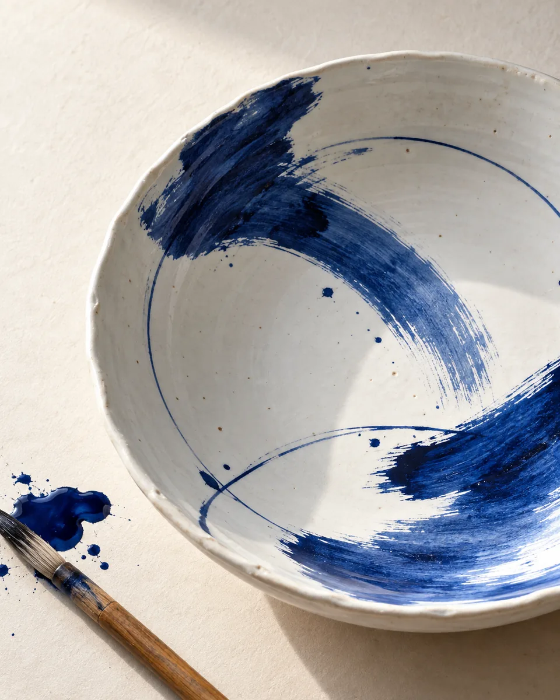

EHIME CULTURE FESTIVAL / 2028
愛媛を、ひらく。
土に、ことばに、音に、人に。
あなたの入口から、この土地の文化へ。
FESTIVAL DATES
10.22—12.03
2028年 / 日曜日から日曜日まで / 43日間

A CULTURE OF MANY VOICES
01—04
暮らしのなかに、
まだ知らない文化がある。
器に描かれた藍。まちを歩いて生まれたことば。
海から届く味わい。ひとりひとりの表現。
愛媛の文化は、日々の営みからひらきます。
国民文化祭と全国障害者芸術・文化祭を一体的に開催する43日間。あなたの「気になる」から、出会いを始めてください。
FOUR WAYS INTO EHIME
文化の入口。
読む、見つける、持ちかえる。
四つの視点から愛媛へ。
 01
01THE HAND / TOBE
白磁に、藍を。
砥部町 / 手ざわり
02
THE WORD / MATSUYAMA
十七音の、余白。
松山市 / ことば
03
THE TABLE / UWAJIMA
海から、ひと皿。
宇和島市 / 味わい
04
THE EXPRESSION / EVERYONE
それぞれの、見え方。
愛媛県内 / 表現
写真はAI生成。図形は俳句・食卓・多様な表現に着想を得た編集ビジュアルです。
ROAD TO 2028
文化が集う、その前に。
文化祭の楽しみ方を想定した掲載例
以下は架空の催しです。開催の告知ではありません。
OPEN TO EVERYONE
楽しみたい気持ちに、
入口をひらく。
障害のある人もない人も。
会場の設備や情報の伝え方、参加に必要な支援を確認できるように。催しを探すところから、支援の情報につながります。
UPDATES